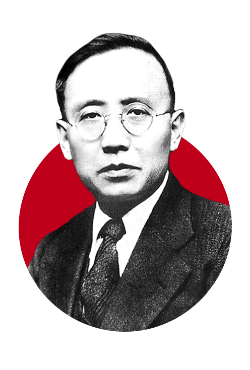
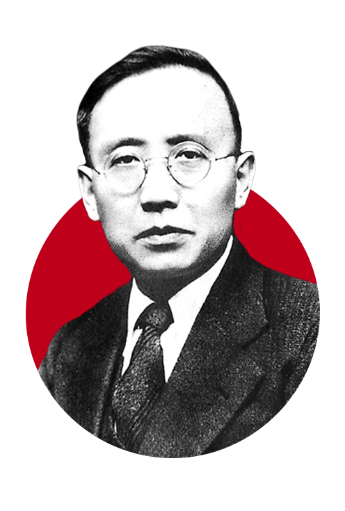
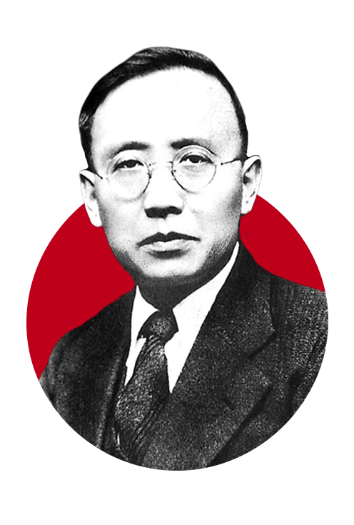
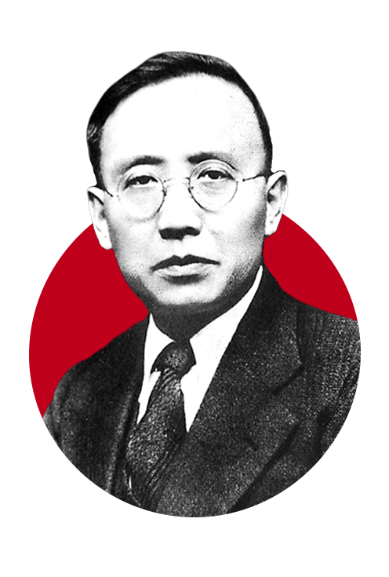

马克思主义理论传播与革命思想奠基流亡日本期间（1928-1937），郭沫若完成《中国古代社会研究》等著作，首次以马克思主义唯物史观论证中国古代存在奴隶制社会，回应了“中国特殊论”对革命的质疑。这一理论为中国共产党探索中国革命道路提供了学术支撑，间接呼应了长征期间党的理论建设需求。他通过翻译马克思主义经典著作（如《政治经济学批判》）和发表文章，向国内输入革命理论资源。1935年，他捐出译作版税资助“左联”东京支部活动，间接支援了国内文化战线的斗争